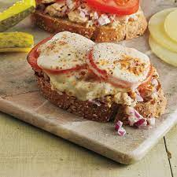

Open-Faced Tuna Melt

Description
A quick, classic diner sandwich with an open-face twist.
Ingredients
- 2 slices sandwich bread, white or wheat
- 1 can oil or water packed tuna
- 1/2 onion, thinly sliced
- 1/2 tomato, thinly sliced
- 1 or 2 leaves chruncy letture (can substitute arugula for a bit of a kick
- 1/4 cup mayonnaise
- 1 tablespoon mixed, dried spices, such as onion powder, garlic powder, cayenne, paprika (smoked or sweet) etc.
- 4 slices of your favorite cheese
Stepss
- Set rack 6 inches from broiler and turn broiler to high.
- Lighly toast sandwich bread.
- Open and drain the can of tuna and place in small bowl.
- Add mayonnaise and spices and mix thouroughly.
- Place lettuce on top of each slice of bread, followed by onion and tuna mix. Place Tomato on top of tuna and cheese on top of tomato.
- Place sandwiches under broiler until cheese is melted and bubbly, about 2 minutes.
- Remove and let cool slightly.
Homepage